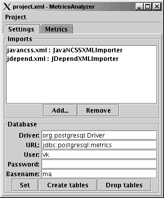
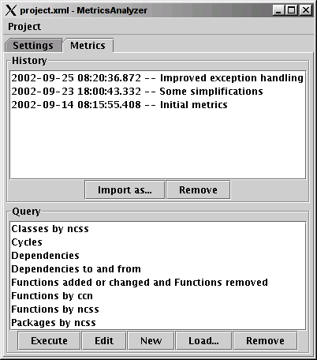

MetricsAnalyzer is a simple tool designed to help and encourage collecting and analyzing software metrics. MetricsAnalyzer stores metrics into a SQL database and allows the user to write SQL queries to analyze the stored metrics.
The settings tab is used for configuring MetricsAnalyzer.

The metrics tab is used for managing metrics snapshots and executing queries.

MetricsAnalyzer is licensed under the GPL.
MetricsAnalyzer has been developed by Vesa Karvonen at TIKE/MMM.